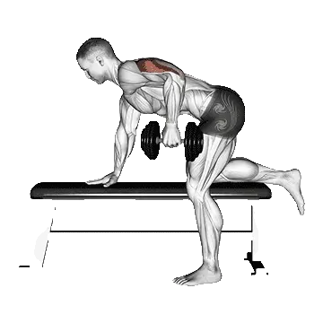

Tríceps patada con mancuernas
Tríceps patada con mancuernas permite consultar el peso medio y los estándares de fuerza como referencia dentro de brazos. Los músculos principales son Tríceps braquial.
Peso medio
BrazosEjercicios de brazosBícepsTrícepsTríceps braquial

Músculos trabajados
| Grupo | Músculos |
|---|---|
| Músculos principales | Tríceps braquial |
| Músculos secundarios | Deltoides, Bíceps braquial |
| Estabilizadores | Oblicuo externo, Erectores espinales |
| Agarre | Flexores del antebrazo |
Peso medio de Tríceps patada con mancuernas [1RM]
| Nivel | ||
|---|---|---|
| Principiante | 4 kg (9 lb) |
3 kg (7 lb) |
| Novato | 10 kg (21 lb) |
6 kg (14 lb) |
| Intermedio | 18 kg (40 lb) |
11 kg (24 lb) |
| Avanzado | 29 kg (65 lb) |
17 kg (37 lb) |
| Élite | 43 kg (94 lb) |
23 kg (51 lb) |
Nota: estos estándares son estimaciones de 1RM basadas en levantadores promedio. Pueden variar según el peso corporal, la edad y otros factores personales. Consulta los datos detallados en la tabla inferior.
Estándares de fuerza de Tríceps patada con mancuernas(lb)
Hombres por peso corporal (lb) [1RM]
| Peso corporal | Principiante | Novato | Intermedio | Avanzado | Élite |
|---|---|---|---|---|---|
| 110 | 3 | 11 | 25 | 45 | 68 |
| 120 | 4 | 13 | 28 | 48 | 73 |
| 130 | 5 | 15 | 31 | 52 | 77 |
| 140 | 7 | 17 | 33 | 55 | 81 |
| 150 | 8 | 19 | 36 | 58 | 85 |
| 160 | 9 | 21 | 38 | 61 | 88 |
| 170 | 10 | 22 | 41 | 64 | 92 |
| 180 | 11 | 24 | 43 | 67 | 95 |
| 190 | 12 | 26 | 45 | 70 | 99 |
| 200 | 13 | 27 | 47 | 73 | 102 |
| 210 | 14 | 29 | 49 | 75 | 105 |
| 220 | 16 | 30 | 51 | 78 | 108 |
| 230 | 17 | 32 | 53 | 80 | 111 |
| 240 | 18 | 33 | 55 | 82 | 114 |
| 250 | 19 | 35 | 57 | 85 | 116 |
| 260 | 20 | 36 | 59 | 87 | 119 |
| 270 | 21 | 38 | 61 | 89 | 121 |
| 280 | 22 | 39 | 63 | 91 | 124 |
| 290 | 23 | 41 | 64 | 93 | 126 |
| 300 | 24 | 42 | 66 | 95 | 129 |
| 310 | 25 | 43 | 68 | 97 | 131 |
Hombres por edad [1RM]
| Edad | Principiante | Novato | Intermedio | Avanzado | Élite |
|---|---|---|---|---|---|
| 15 | 7 | 18 | 34 | 55 | 80 |
| 20 | 9 | 21 | 39 | 63 | 91 |
| 25 | 9 | 21 | 40 | 65 | 94 |
| 30 | 9 | 21 | 40 | 65 | 94 |
| 35 | 9 | 21 | 40 | 65 | 94 |
| 40 | 9 | 21 | 40 | 65 | 94 |
| 45 | 8 | 20 | 38 | 61 | 89 |
| 50 | 8 | 19 | 36 | 58 | 83 |
| 55 | 7 | 17 | 33 | 53 | 77 |
| 60 | 7 | 16 | 30 | 49 | 70 |
| 65 | 6 | 14 | 27 | 44 | 64 |
| 70 | 5 | 13 | 24 | 39 | 57 |
| 75 | 5 | 12 | 22 | 35 | 51 |
| 80 | 4 | 10 | 19 | 32 | 46 |
| 85 | 4 | 9 | 17 | 28 | 41 |
| 90 | 3 | 8 | 16 | 25 | 37 |
Mujeres por peso corporal (lb) [1RM]
| Peso corporal | Principiante | Novato | Intermedio | Avanzado | Élite |
|---|---|---|---|---|---|
| 90 | 3 | 8 | 16 | 25 | 37 |
| 100 | 4 | 10 | 17 | 28 | 40 |
| 110 | 5 | 11 | 19 | 30 | 42 |
| 120 | 6 | 12 | 21 | 32 | 45 |
| 130 | 7 | 13 | 22 | 34 | 47 |
| 140 | 8 | 14 | 24 | 36 | 49 |
| 150 | 8 | 16 | 25 | 38 | 51 |
| 160 | 9 | 17 | 27 | 39 | 53 |
| 170 | 10 | 18 | 28 | 41 | 55 |
| 180 | 11 | 19 | 29 | 42 | 57 |
| 190 | 12 | 20 | 31 | 44 | 59 |
| 200 | 12 | 21 | 32 | 45 | 60 |
| 210 | 13 | 22 | 33 | 47 | 62 |
| 220 | 14 | 23 | 34 | 48 | 64 |
| 230 | 15 | 24 | 35 | 49 | 65 |
| 240 | 15 | 24 | 36 | 51 | 67 |
| 250 | 16 | 25 | 37 | 52 | 68 |
| 260 | 17 | 26 | 38 | 53 | 69 |
Mujeres por edad [1RM]
| Edad | Principiante | Novato | Intermedio | Avanzado | Élite |
|---|---|---|---|---|---|
| 15 | 6 | 12 | 21 | 31 | 44 |
| 20 | 7 | 14 | 24 | 36 | 50 |
| 25 | 7 | 14 | 24 | 37 | 51 |
| 30 | 7 | 14 | 24 | 37 | 51 |
| 35 | 7 | 14 | 24 | 37 | 51 |
| 40 | 7 | 14 | 24 | 37 | 51 |
| 45 | 7 | 13 | 23 | 35 | 49 |
| 50 | 6 | 13 | 22 | 33 | 46 |
| 55 | 6 | 12 | 20 | 30 | 42 |
| 60 | 5 | 11 | 18 | 28 | 39 |
| 65 | 5 | 10 | 16 | 25 | 35 |
| 70 | 4 | 9 | 15 | 22 | 31 |
| 75 | 4 | 8 | 13 | 20 | 28 |
| 80 | 3 | 7 | 12 | 18 | 25 |
| 85 | 3 | 6 | 11 | 16 | 22 |
| 90 | 3 | 6 | 10 | 14 | 20 |
Nota: el peso de mancuerna mostrado en la tabla corresponde a una sola mancuerna.
Cómo leer la tabla
| Nivel | Descripción | Distribución |
|---|---|---|
| Principiante | Domina la técnica correcta y entrena de forma constante durante al menos 1 mes. | Parte inferior 5% |
| Novato | Entrena de forma constante durante al menos 6 meses. | Top 80% |
| Intermedio | Entrena de forma constante durante al menos 2 años. | Top 50% |
| Avanzado | Entrena de forma constante durante más de 5 años. | Top 20% |
| Élite | Entrena este ejercicio de forma especializada durante más de 5 años. | Top 5% |
Otros ejercicios
Cuerpo completo

Peso muerto
Cuerpo completo / BIG3

Press de banca
Cuerpo completo / BIG3

Sentadilla
Cuerpo completo / BIG3

Peso muerto con barra hexagonal
Cuerpo completo

Power clean
Cuerpo completo

Peso muerto rumano
Cuerpo completo

Peso muerto sumo
Cuerpo completo

Clean and jerk
Cuerpo completo

Snatch
Cuerpo completo

Clean
Cuerpo completo

Clean and press
Cuerpo completo

Rack pull
Cuerpo completo

Peso muerto rumano con mancuernas
Cuerpo completo / Mancuernas

Hang clean
Cuerpo completo

Peso muerto con piernas rígidas
Cuerpo completo

Muscle-ups
Cuerpo completo / Peso corporal

Power snatch
Cuerpo completo

Thruster
Cuerpo completo

Push jerk
Cuerpo completo

Peso muerto con mancuernas
Cuerpo completo / Mancuernas

Peso muerto con déficit
Cuerpo completo

Peso muerto rumano a una pierna
Cuerpo completo

Burpees
Cuerpo completo / Peso corporal

Hang power clean
Cuerpo completo

Split jerk
Cuerpo completo

Snatch con mancuernas
Cuerpo completo / Mancuernas

Clean high pull
Cuerpo completo

Snatch peso muerto
Cuerpo completo

Tirón de clean
Cuerpo completo

Peso muerto con pausa
Cuerpo completo

Peso muerto a una pierna
Cuerpo completo

Muscle snatch
Cuerpo completo

Jefferson peso muerto
Cuerpo completo

Snatch tirón
Cuerpo completo

Wall ball
Cuerpo completo

Zercher peso muerto
Cuerpo completo

Peso muerto a una pierna con mancuernas
Cuerpo completo / Mancuernas

Clean and press con mancuernas
Cuerpo completo / Mancuernas

Muscle-ups en anillas
Cuerpo completo / Peso corporal

Thruster con mancuernas
Cuerpo completo / Mancuernas

Hang snatch
Cuerpo completo

Alto tirón con mancuernas
Cuerpo completo / Mancuernas

Hang clean con mancuernas
Cuerpo completo / Mancuernas

Peso muerto detrás de la espalda
Cuerpo completo

Clap tirón up
Cuerpo completo

Squat thrust
Cuerpo completo
Pecho
Press de banca
Pecho / BIG3

Press de banca con mancuernas
Pecho / Mancuernas

Flexiones
Pecho / Peso corporal

Press de banca inclinado
Pecho

Press de banca inclinado con mancuernas
Pecho / Mancuernas

Press de banca agarre cerrado
Pecho

Apertura de pecho en máquina
Pecho / Máquina

Apertura con mancuernas
Pecho / Mancuernas

Apertura declinado con mancuernas
Pecho / Mancuernas

Press de banca declinado
Pecho

Press de banca en máquina Smith
Pecho / Máquina

Apertura en cable
Pecho / Cable

Press de pecho
Pecho

En el suelo press
Pecho

Apertura inclinado con mancuernas
Pecho / Mancuernas

En el suelo press con mancuernas
Pecho / Mancuernas

Press de banca declinado con mancuernas
Pecho / Mancuernas

Press de banca con pausa
Pecho

Flexiones a un brazo
Pecho / Peso corporal

Press de banca agarre inverso
Pecho

Diamante flexiones
Pecho / Peso corporal

Press de banca agarre cerrado con mancuernas
Pecho / Mancuernas

Banco pin press
Pecho

Press de banca agarre amplio
Pecho

Flexiones declinado
Pecho / Peso corporal

Press de banca inclinado agarre cerrado
Pecho

Flexiones inclinadas
Pecho / Peso corporal

Flexiones agarre cerrado
Pecho / Peso corporal

Arquero flexiones
Pecho / Peso corporal

Spoto press
Pecho
Espalda
Peso muerto
Espalda / BIG3

Dominadas
Espalda / Peso corporal

Remo inclinado
Espalda

Jalón al pecho
Espalda

Chin-ups
Espalda / Peso corporal

Remo con mancuernas
Espalda / Mancuernas

Remo sentado en cable
Espalda / Cable

Encogimiento con barra
Espalda / Barra

Remo con barra T
Espalda

Encogimiento con mancuernas
Espalda / Mancuernas

Pendlay remo
Espalda

Remo en máquina
Espalda / Máquina

Pullover con mancuernas
Espalda / Mancuernas

Apertura inversa con mancuernas
Espalda / Mancuernas

Remo con apoyo de pecho con mancuernas
Espalda / Mancuernas

Jalón al pecho agarre cerrado
Espalda

Apertura inversa en máquina
Espalda / Máquina

Jalón al pecho agarre inverso
Espalda

Dominadas agarre neutro
Espalda / Peso corporal

Jalón brazos rectos
Espalda

Apertura inversa en cable
Espalda / Cable

Yates remo
Espalda

Remo inclinado con mancuernas
Espalda / Mancuernas

Extensión lumbar
Espalda

Banco tirón
Espalda

Extensión lumbar en máquina
Espalda / Máquina

Pullover con barra
Espalda / Barra

Dominadas a un brazo
Espalda / Peso corporal

Banco tirón con mancuernas
Espalda / Mancuernas

Remo invertido
Espalda

Renegade remo
Espalda

Jalón al pecho a un brazo
Espalda

Remo sentado en cable a un brazo
Espalda / Cable

Remo al mentón en cable
Espalda / Cable

Encogimiento en máquina
Espalda / Máquina

Encogimiento con barra hexagonal
Espalda

Encogimiento en máquina Smith
Espalda / Máquina

Elevación en Y inclinado con mancuernas
Espalda / Mancuernas

Encogimiento en cable
Espalda / Cable

Brazos flexionados pullover con barra
Espalda / Barra

Power encogimiento con barra
Espalda / Barra

Meadows remo
Espalda

Encogimiento detrás de la espalda con barra
Espalda / Barra

Hiperextensión inversa
Espalda
Hombros

Press de hombro
Hombros

Press de hombro con mancuernas
Hombros / Mancuernas

Elevación lateral con mancuernas
Hombros / Mancuernas

Press militar
Hombros

Press de hombro sentado
Hombros

Press de hombro sentado con mancuernas
Hombros / Mancuernas

Press de hombro en máquina
Hombros / Máquina

Push press
Hombros

Remo al mentón
Hombros

Elevación frontal con mancuernas
Hombros / Mancuernas

Elevación lateral en cable
Hombros / Cable

Arnold press
Hombros

Face pull
Hombros

Curl de cuello
Hombros

Remo al mentón con mancuernas
Hombros / Mancuernas

Elevación lateral en máquina
Hombros / Máquina

Press tras nuca
Hombros

Pino flexiones
Hombros / Peso corporal

Elevación frontal con barra
Hombros / Barra

Log press
Hombros

Press con landmine
Hombros

Extensión de cuello
Hombros

Z press
Hombros

Viking press
Hombros

Shoulder pin press
Hombros

Z press con mancuernas
Hombros / Mancuernas

Press a un brazo con landmine
Hombros

Rotación externa con mancuernas
Hombros / Mancuernas

Pike flexiones
Hombros / Peso corporal

Push press con mancuernas
Hombros / Mancuernas

Face pull con mancuernas
Hombros / Mancuernas

Rotación externa en cable
Hombros / Cable
Brazos

Curl con mancuernas
Brazos / Mancuernas

Curl con barra
Brazos / Barra

Curl martillo
Brazos

Curl con barra EZ
Brazos

Predicador curl
Brazos

Curl de bíceps en cable
Brazos / Cable

Curl de concentración con mancuernas
Brazos / Mancuernas

Curl inclinado con mancuernas
Brazos / Mancuernas

Curl de bíceps en máquina
Brazos / Máquina

Estricto curl
Brazos

Curl de bíceps a un brazo en cable
Brazos / Cable

Predicador curl a un brazo con mancuernas
Brazos / Mancuernas

Curl martillo inclinado
Brazos

Spider curl
Brazos

Zottman curl
Brazos

Curl sentado con mancuernas
Brazos / Mancuernas

Cheat curl
Brazos

Curl martillo en cable
Brazos / Cable

Overhead curl en cable
Brazos / Cable

Curl inclinado en cable
Brazos / Cable

Curl tumbado en cable
Brazos / Cable

Fondos
Brazos / Peso corporal

Jalón de tríceps
Brazos

Extensión de tríceps tumbado
Brazos

Cuerda de tríceps pushdown
Brazos

Jalón a un brazo
Brazos

Extensión de tríceps con mancuernas
Brazos / Mancuernas

Extensión de tríceps
Brazos

Extensión de tríceps tumbado con mancuernas
Brazos / Mancuernas

Dips sentado en máquina
Brazos / Máquina

Tríceps patada con mancuernas
Brazos / Mancuernas

Overhead extensión de tríceps en cable
Brazos / Cable

Extensión de tríceps en máquina
Brazos / Máquina

Extensión de tríceps sentado con mancuernas
Brazos / Mancuernas

Jalón de tríceps agarre inverso
Brazos

JM press
Brazos

Tate press
Brazos

Dips en anillas
Brazos / Peso corporal

Fondos en banco
Brazos / Peso corporal

Curl de muñeca
Brazos

Inverso curl con barra
Brazos / Barra

Curl de muñeca inverso
Brazos

Curl de muñeca con mancuernas
Brazos / Mancuernas

Curl de muñeca inverso con mancuernas
Brazos / Mancuernas

Inverso curl con mancuernas
Brazos / Mancuernas
Piernas
Sentadilla
Piernas / BIG3

Trineo prensa de piernas
Piernas

Sentadilla frontal
Piernas

Hip thrust
Piernas

Extensión de pierna
Piernas

Horizontal prensa de piernas
Piernas

Hack squat
Piernas

Curl femoral sentado
Piernas

Sentadilla búlgara con mancuernas
Piernas / Mancuernas

Sentadilla goblet
Piernas

Curl femoral tumbado
Piernas

Elevación de gemelos en máquina
Piernas / Máquina

Lunge con mancuernas
Piernas / Mancuernas

Box sentadilla
Piernas

Sentadilla con peso corporal
Piernas

Vertical prensa de piernas
Piernas

Sentadilla búlgara
Piernas

Elevación de gemelos sentado
Piernas

Sentadilla en máquina Smith
Piernas / Máquina

Abducción de cadera
Piernas

Good morning
Piernas

Zercher sentadilla
Piernas

Lunge con barra
Piernas / Barra

Aducción de cadera
Piernas

Sentadilla overhead
Piernas

Elevación de gemelos con barra
Piernas / Barra

Sentadilla con mancuernas
Piernas / Mancuernas

Sentadilla split
Piernas

Elevación de gemelos con mancuernas
Piernas / Mancuernas

Pull through en cable
Piernas / Cable

Curl femoral de pie
Piernas

Sentadilla con landmine
Piernas

Inverso lunge con barra
Piernas / Barra

Puente de glúteos con barra
Piernas / Barra

Press a una pierna
Piernas

Trineo press elevación de gemelos
Piernas

Sentadilla a una pierna
Piernas

Belt sentadilla
Piernas

Safety bar sentadilla
Piernas

Pistol sentadilla
Piernas

Sentadilla con pausa
Piernas

Hack squat con barra
Piernas / Barra

Sentadilla sumo
Piernas

Patada en cable
Piernas / Cable

Peso corporal elevación de gemelos
Piernas

Zancada
Piernas

Puente de glúteos
Piernas

Pin sentadilla
Piernas

Caminando lunge
Piernas

Sentadilla frontal con mancuernas
Piernas / Mancuernas

Sentadilla split con mancuernas
Piernas / Mancuernas

Inverso lunge
Piernas

Salto con sentadilla
Piernas

Curl nórdico de isquios
Piernas

Sissy sentadilla
Piernas

Half sentadilla
Piernas

Glute ham raise
Piernas

Extensión de pierna en cable
Piernas / Cable

Elevación de gemelos a una pierna sentado
Piernas

Side lunge
Piernas

Patada de glúteo
Piernas

Donkey elevación de gemelos
Piernas

Caminando elevación de gemelos con mancuernas
Piernas / Mancuernas

Elevación lateral de pierna
Piernas / Peso corporal

Jefferson sentadilla
Piernas

En el suelo abducción de cadera
Piernas

Extensión de cadera
Piernas

En el suelo extensión de cadera
Piernas
Core

Sit-ups
Core / Peso corporal

Crunches en cable
Core / Cable

Crunches sentado en máquina
Core / Máquina

Crunch abdominal
Core / Peso corporal

Flexión lateral con mancuernas
Core / Mancuernas

Woodchopper en cable
Core / Cable

Elevación de piernas colgado
Core / Peso corporal

Giro ruso
Core / Peso corporal

Elevación de piernas tumbado
Core / Peso corporal

Sit-ups declinado
Core / Peso corporal

Elevación de rodillas colgado
Core / Peso corporal

Rueda abdominal
Core

Toes-to-bar
Core / Peso corporal

Crunches declinado
Core / Peso corporal

Jumping jack
Core / Peso corporal

Bicicleta crunches
Core / Peso corporal

Inverso crunches
Core / Peso corporal

Flutter kicks
Core / Peso corporal

Mountain climbers
Core / Peso corporal

Polea alta crunches
Core / Peso corporal

Crunches de pie en cable
Core / Cable

Superman
Core / Peso corporal

Crunch lateral
Core / Peso corporal

Silla romana flexión lateral
Core

Tijeras abdominales
Core / Peso corporal